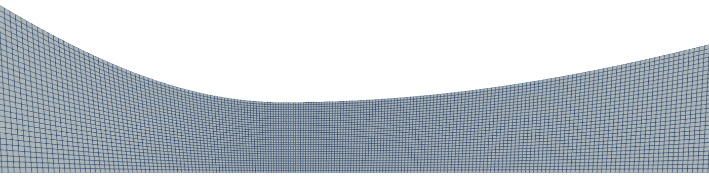
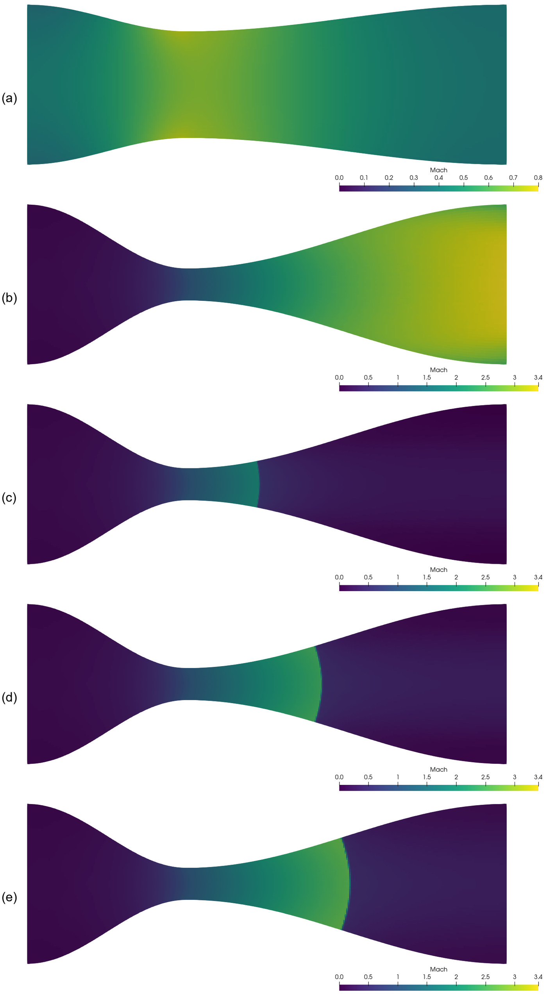
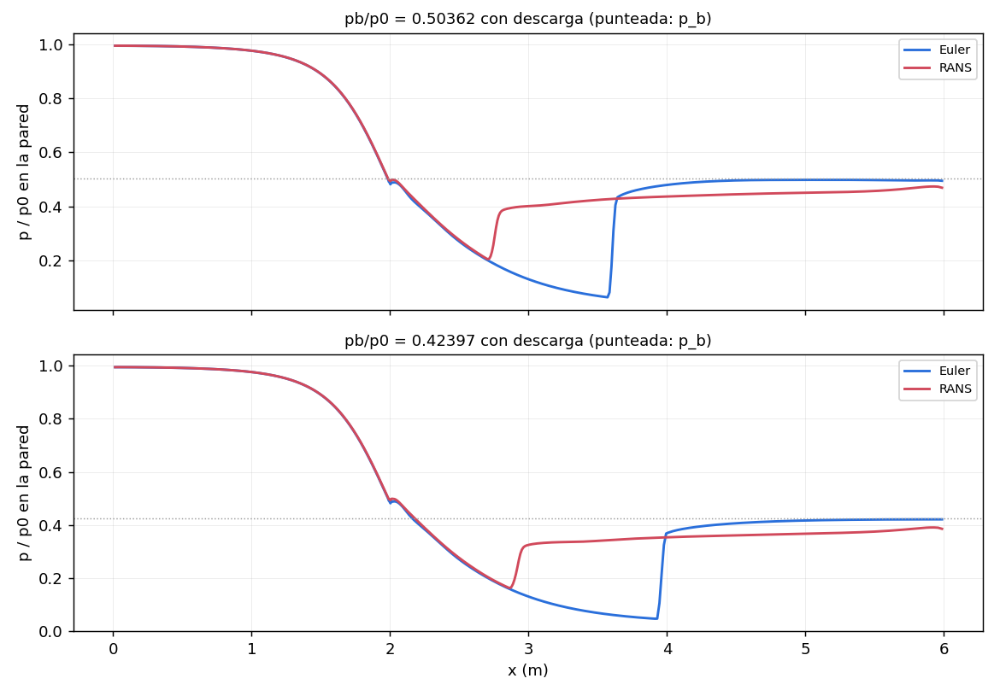

One nozzle, one mesh, one script: changing only the back pressure takes the flow from a subsonic venturi to the design condition and to a normal shock inside the diverging part. Each case is checked against quasi-one-dimensional theory, and the guide says where that theory stops being right.
OpenFOAM · Flujo compresible · Tutorial 1.2
La tobera convergente-divergente sin descarga
Una tobera, una malla y un guion: con sólo cambiar la presión de descarga, el flujo pasa de un venturi subsónico al diseño y a un choque normal dentro del divergente. Cada caso se compara con la teoría cuasi-unidimensional, y la guía dice dónde esa teoría deja de acertar.
OpenFOAM · Kompressible Strömung · Tutorial 1.2
Die Laval-Düse ohne Austrittsstrahl
Eine Düse, ein Netz, ein Skript: Nur durch Ändern des Gegendrucks geht die Strömung vom subsonischen Venturi zum Auslegungszustand und zu einem senkrechten Stoß im divergenten Teil über. Jeder Fall wird mit der quasi-eindimensionalen Theorie verglichen, und die Anleitung sagt, wo diese Theorie nicht mehr stimmt.
Estimated reading: 60 min (20 min of computing)Lectura estimada: 60 min (20 min de cálculo)Lesedauer: ca. 60 min (20 min Rechenzeit)Level: undergraduateNivel: licenciaturaNiveau: BachelorVerified on OpenFOAM 12 (blueCFD-Core 2024), Gmsh 4.15.2 and ParaView 5.11.2Verificado en OpenFOAM 12 (blueCFD-Core 2024), Gmsh 4.15.2 y ParaView 5.11.2Geprüft mit OpenFOAM 12 (blueCFD-Core 2024), Gmsh 4.15.2 und ParaView 5.11.2
Full English translation in preparation. Each section below carries a summary of its content; the complete text, figures and tables are available in the Spanish version, which the ES button above selects.
Run one nozzle in its three regimes with one script; know which OpenFOAM solver fits each (shockFluid, density-based, for supersonic flow and shocks; fluid, pressure-based, for low Mach); compute the characteristic back pressures and the shock position by hand; compare five runs with quasi-one-dimensional theory with a short script; and say what that theory cannot predict.
The problem
What is simulated
Half of a planar nozzle with a cosine contour: area ratio 5, a 2 m converging and a 4 m diverging part, inviscid (slip walls), the axis as a symmetry plane, stagnation conditions at the inlet and the back pressure at the outlet. A second nozzle with area ratio 1.5 is used for the subsonic venturi.
The theory
The theory the simulation must reproduce
The area-Mach relation, the isentropic pressure ratio and the normal-shock relations give three characteristic back pressures for area ratio 5: pI = 0.99053 (choking), pII = 0.24336 (shock at the exit) and pIII = 0.020993 (design, exit Mach 3.1748). Between pI and pII a normal shock stands in the diverging part; the guide places it at A/At = 1.5, 2.5 and 3.0.
Step by step
Five cases with one script
In the blueCFD-Core terminal: unzip tobera-sin-descarga.zip into $FOAM_RUN, copy it once per case, and run ./Allrun AR PB SOLVER (Gmsh, gmshToFoam, checkMesh, setFields, the solver in stages and the samples), then python3 validar.py. The five cases take about 20 minutes on an 8-core laptop.
The case
The case, file by file
The parametric tobera.geo; stagnation inlet (totalPressure, totalTemperature) and a waveTransmissive outlet; the start with the converging part at stagnation pressure (setFields); shockFluid in three stages (first order, second order, time average); fluid with transonic yes for the venturi; and the samples on the axis and on twelve cross-sections that validar.py reads.
Results
The three regimes in ParaView
The Mach field of the five cases and the Mach number along the axis against the quasi-one-dimensional curve, with Plot Over Line as in tutorial 1.1. The shocks are curved: weaker away from the axis.
Worked example
The five cases against the theory
Choking (throat Mach 0.9992), mass flow (0.9982 of the choked value) and the mean Mach number of the diverging part (within 0.9 %) agree with the theory; so does the shock position on the axis (within 0.71 % of the diverging length). The exit total pressure of the design case (0.9910) is a numerical loss, and the total pressure behind the A/At = 2.5 shock is 2 % high because the shock is curved. With viscosity the boundary layer separates and the shock moves upstream: the box at the end says by how much.
Common errors
What goes wrong, and what OpenFOAM says
shockFluid at low Mach (it runs but the mass flow is half the right one); fluid in the design case; GAMG with DIC and transonic yes; OpenFOAM 13 syntax in setFieldsDict; Gmsh missing from the blueCFD PATH; and running ./Allrun twice in the same folder.
Suggested exercise
The mass-flow curve and a fourth shock
Trace the mass-flow curve of the venturi against the back pressure and find where it chokes; place a fourth shock at A/At = 2.0 and check it.
Appendix
Where the shock goes
How the back pressure that puts the shock at a given area ratio is found: the shock loss sets a new critical area downstream, and the subsonic exit follows from it.
Sources
References
Anderson's Modern Compressible Flow and NACA Report 1135 for the theory; the OpenFOAM 12 sources and the Kurganov-Tadmor and van Leer papers for the numerics; Summerfield and co-authors for nozzle separation.
Objetivos de aprendizaje
Qué se debe poder hacer al terminar
El 1.1 resolvió un flujo supersónico que entra y sale supersónico: la frontera de salida no tenía nada que decir. En una tobera la salida manda. Con la misma tobera y la misma malla, la presión de descarga decide si el flujo es subsónico en toda la tobera, supersónico desde la garganta o supersónico hasta un choque normal dentro del divergente. Esta guía corre esos casos con un solo guion y los compara con la teoría cuasi-unidimensional de cualquier libro de flujo compresible.
Calcular las tres presiones características de una tobera y la presión que pone un choque normal en un lugar dado.
Correr cinco casos con un guion que se detiene en el primer error y se puede repetir.
Elegir el solucionador de OpenFOAM que corresponde a cada régimen: shockFluid (basado en densidad) para el supersónico y los choques, fluid (basado en presión) para el subsónico.
Comparar el bloqueo, el gasto, el Mach del divergente y la posición del choque con la teoría, con un guion de Python que no necesita instalar nada.
Decir qué no puede predecir la teoría cuasi-unidimensional, y qué no predice este cálculo sin viscosidad.
Qué hace falta. Lo mismo que en el 1.1: blueCFD-Core 2024 (OpenFOAM 12 para Windows, con ParaView 5.11.2) y Gmsh 4.15.2 descomprimido en C:\gmsh-4.15.2-Windows64. El caso es tobera-sin-descarga.zip. Los cinco casos tardan en total unos 20 minutos en la laptop de la serie. La malla de la tobera se construye paso a paso en los tutoriales 2.3.1 y 2.3.2 de Gmsh; para esta guía no hace falta haberlos hecho, porque el .geo viene en el caso.
El problema
Qué se va a simular
Una tobera convergente-divergente plana: dos paredes que se acercan hasta la garganta y se separan hasta la salida, con la razón de áreas \(A_e/A_t\) = 5 entre la salida y la garganta. Como es simétrica, se calcula sólo la mitad de arriba, con el eje como plano de simetría (figura 1). Las paredes no frenan el gas: el cálculo es de Euler, sin viscosidad, como el de la rampa.
Figura 1.La media tobera. La pared de la tobera de la guía (\(A_e/A_t\) = 5, continua) y la del venturi (\(A_e/A_t\) = 1.5, punteada): el mismo contorno cosenoidal con otra garganta. Sólo se calcula la mitad de arriba; el eje es un plano de simetría.
En la entrada el gas viene de un depósito en reposo, con presión y temperatura de remanso \(p_0\) = 1 y \(T_0\) = 1. En la salida se impone la presión del lugar donde la tobera descarga, \(p_b\). La tobera acaba en la salida: lo que hace el chorro afuera es el tema del 1.3, con descarga.
Dato
Valor
Dónde se fija
Semialtura de la salida, \(H_e\)
1 m
tobera.geo: He
Razón de áreas, \(A_e/A_t\)
5 (1.5 para el venturi)
AR, primer argumento del Allrun
Semialtura de la garganta, \(H_t = H_e/(A_e/A_t)\)
0.2 m (0.667 m con 1.5)
se calcula en tobera.geo
Largo del convergente y del divergente
2 m y 4 m
Lc, Ld
Contorno
\(y = H_t + (H_e - H_t)\,\tfrac{1}{2}(1 - \cos \pi s)\), con \(s\) de 0 a 1 en cada tramo
tobera.geo
Celdas en la semialtura de la salida
30 (10 830 celdas en total; 6 570 con 1.5)
nR
Presión y temperatura de remanso
\(p_0 = 1\), \(T_0 = 1\)
0.orig/p, 0.orig/T
Presión de descarga, \(p_b/p_0\)
de 0.9029 a 0.020993
PB, segundo argumento
Relación de calores específicos, \(\gamma\)
1.4
constant/physicalProperties
Tabla 1.Datos del caso. Las longitudes están en tobera.geo y se cambian desde la terminal con -setnumber; el gas es el normalizado del 1.1, con el que la velocidad del sonido de remanso vale 1.
La pregunta de esta guía: con la presión de descarga como única perilla, ¿reproduce OpenFOAM los regímenes de la teoría cuasi-unidimensional, con el gasto, el Mach y el choque donde ésta los pone? Y la segunda: ¿dónde deja de bastar esa teoría?
La teoría
La teoría que la simulación tiene que reproducir
La teoría cuasi-unidimensional supone que en cada sección de la tobera el flujo es uniforme y que sólo cambia a lo largo del eje \(x\), con el área \(A(x)\). Fuera de los choques el flujo es isentrópico, y todo se escribe en función del Mach \(M\) (Anderson, 2003).
La relación área-Mach
El área en la que un flujo llegaría a Mach 1, \(A^*\), relaciona el área y el Mach en cada sección:
Para cada \(A/A^*\) mayor que 1 hay dos soluciones, una subsónica y una supersónica. Mientras la garganta no llega a Mach 1, \(A^*\) es menor que el área de la garganta y el flujo es subsónico en toda la tobera, como en un venturi. Cuando la garganta llega a Mach 1, \(A^* = A_t\) y la tobera está bloqueada: bajar más la presión de descarga ya no cambia nada antes de la garganta, ni el gasto.
La presión sale del Mach con la relación isentrópica, y el gasto de la tobera bloqueada sólo depende del depósito y de la garganta:
Con la ecuación (1) en la salida, la (2) y la (5) salen tres presiones de descarga que separan los regímenes (tabla 2):
\(p_b > p_I\): subsónico en toda la tobera, sin bloqueo.
\(p_{II} < p_b < p_I\): la garganta está bloqueada; el flujo se acelera, supersónico, en parte del divergente, pasa por un choque normal y sigue subsónico hasta la salida. Mientras más baja \(p_b\), más lejos de la garganta queda el choque.
\(p_b = p_{III}\): el diseño. Supersónico desde la garganta hasta la salida, con la presión de salida igual a la de descarga.
\(A_e/A_t = 5\)
\(A_e/A_t = 1.5\)
Qué pasa en la tobera
\(p_I/p_0\)
0.99053
0.88052
la garganta llega a Mach 1 y el divergente sigue subsónico
\(p_{II}/p_0\)
0.24336
0.61573
choque normal justo en la salida
\(p_{III}/p_0\)
0.020993
0.16018
diseño: supersónico hasta la salida, con \(p_e = p_b\)
Mach de salida de diseño
3.1748
1.8541
Tabla 2.Las presiones características. Con la ecuación (1) en la salida y la (2), para las dos toberas de la guía.
Entre \(p_{II}\) y \(p_{III}\), y abajo de \(p_{III}\), el flujo dentro de la tobera es el del diseño; la diferencia entre \(p_e\) y \(p_b\) se arregla afuera, con choques oblicuos o expansiones en el borde de la salida. Eso necesita el dominio exterior: es la tobera sobreexpandida y subexpandida del 1.3.
Figura 2.Los regímenes de la tobera. Presión sobre el eje de la cuasi-1D. Con \(p_b\) entre \(p_I\) y \(p_{II}\) aparece un choque normal en el divergente: la presión salta y después sube, subsónica, hasta \(p_b\). Antes del choque las cuatro curvas son la misma: lo que pase aguas abajo no llega a la parte supersónica.
La figura 2 muestra la presión sobre el eje para los casos de esta guía. Para poner el choque en un lugar dado, \(A_s/A_t\), hay que encadenar las ecuaciones (1), (5) y (2); el Apéndice lo hace paso a paso. La guía pone tres choques: cerca de la garganta (\(A_s/A_t\) = 1.5), a la mitad del divergente (2.5) y más adentro (3.0), con las presiones de la tabla 3.
Por qué el venturi va en otra tobera
Con \(A_e/A_t\) = 5, el régimen subsónico sólo existe con \(p_b/p_0\) entre 0.99053 y 1: menos de 1 % de diferencia de presión entre la entrada y la salida. En ese intervalo el gas apenas se mueve, y el Mach de la salida depende tanto de la presión que una pérdida numérica de presión total de 0.2 % lo cambia 16 % (lo midió la validación). El venturi de la guía usa la misma tobera con \(A_e/A_t\) = 1.5, donde el régimen subsónico llega hasta \(p_b/p_0\) = 0.8805, con \(p_b/p_0\) = 0.9029: Mach 0.70 en la garganta.
Paso a paso
Cinco casos con un guion
Todo se hace en la terminal de blueCFD-Core, como en el 1.1. Cada caso va en su propia copia de la carpeta, para poder abrirlos juntos en ParaView y compararlos.
Carpeta
Orden
Qué dice la cuasi-1D
Tiempo
venturi
./Allrun 1.5 0.9029 fluid
subsónico; Mach 0.700 en la garganta
3.8 min
diseno
./Allrun 5 0.020993 shockFluid
supersónico; Mach 3.175 en la salida
4.1 min
choque15
./Allrun 5 0.77627 shockFluid
choque en \(x\) = 2.920 m, Mach 1.854 antes
4.2 min
choque25
./Allrun 5 0.50362 shockFluid
choque en \(x\) = 3.678 m, Mach 2.443 antes
4.2 min
choque30
./Allrun 5 0.42397 shockFluid
choque en \(x\) = 4.000 m, Mach 2.637 antes
4.2 min
Tabla 3.Los cinco casos de la receta. Cada uno en su copia de la carpeta. Los tiempos son los de la laptop de la serie (8 núcleos; cada caso usa uno).
Descomprimir el caso en la carpeta Descargas: queda una carpeta tobera-sin-descarga con los archivos de la tabla 4.
Abrir la terminal (blueCFD-Core 2024 ▸ blueCFD-Core terminal en el menú Inicio) y agregar Gmsh a la ruta de búsqueda, como en el 1.1:
export PATH="$PATH:/c/gmsh-4.15.2-Windows64"
Hacer una copia por caso en la carpeta de corridas, con el nombre de usuario de cada quien en lugar de ana:
cd $FOAM_RUN/diseno
./Allrun 5 0.020993 shockFluid
El primer número es la razón de áreas; el segundo, la presión de descarga entre la de remanso; el tercero, el solucionador. El guion hace la malla con Gmsh, la convierte, corrige los tipos de parche, la revisa, prepara el arranque y corre shockFluid en tres etapas (sección El caso). Responde, con la ruta completa en lugar de …:
Running gmshToFoam on …/diseno
Running checkMesh on …/diseno
Running setFields on …/diseno
Running foamRun on …/diseno
Running foamRun on …/diseno
Running foamRun on …/diseno
Running foamPostProcess on …/diseno
Running foamPostProcess on …/diseno
Terminado. Siguiente paso: python3 validar.py
Tardó 4.1 minutos. Cada programa deja su salida en un archivo log.* de la carpeta; si alguno falla, el guion se detiene y dice cuál leer.
Compararlo con la teoría:
python3 validar.py
Responde:
Tobera AR = 5, pb/p0 = 0.020993: régimen diseño
cuasi-1D: p_I = 0.99053, p_II = 0.24336, p_III = 0.02099
OpenFOAM teoría diferencia
Mach en la garganta (x = 2) 0.9992 1.0000 -0.08 %
gasto entre el bloqueado 0.9982 1.0000 -0.18 %
Mach medio de la sección x = 2.50 1.4600 1.4633 -0.23 %
Mach medio de la sección x = 3.00 1.9123 1.9242 -0.62 %
Mach medio de la sección x = 3.50 2.3018 2.3206 -0.81 %
Mach medio de la sección x = 4.00 2.6146 2.6374 -0.87 %
Mach medio de la sección x = 4.50 2.8537 2.8767 -0.80 %
Mach medio de la sección x = 5.00 3.0216 3.0436 -0.72 %
Mach medio de la sección x = 5.50 3.1168 3.1422 -0.81 %
Mach medio de la sección x = 5.99 3.1311 3.1748 -1.38 %
presión total media en la salida 0.9910 1.0000 -0.90 %
Los otros cuatro casos, igual, cada uno en su carpeta y con su orden de la tabla 3. Por ejemplo, el choque a la mitad del divergente:
cd $FOAM_RUN/choque25
./Allrun 5 0.50362 shockFluid
python3 validar.py
y el venturi, con la otra tobera y el otro solucionador:
cd $FOAM_RUN/venturi
./Allrun 1.5 0.9029 fluid
python3 validar.py
Ver los resultados:paraFoam en la carpeta de cada caso (sección Resultados).
Para repetir un caso en la misma carpeta, primero ./Allclean, que la deja como recién descomprimida. Si se corre ./Allrun sobre una corrida anterior, el guion se niega en lugar de mezclar resultados.
El caso
El caso, archivo por archivo
El gas, la física (laminar con viscosidad cero, es decir, Euler) y los esquemas numéricos son los de la rampa del 1.1. Lo nuevo es la geometría, las fronteras de una tobera, el arranque y que un mismo caso sirve para dos solucionadores.
Archivo
Qué es
tobera.geo
la media tobera paramétrica de Gmsh (la del 2.3.2 de Gmsh)
Allrun, Allclean
el guion de los cinco casos y el que deja la carpeta como nueva
validar.py
la comparación con la cuasi-1D; sólo usa la biblioteca estándar de Python
0.orig/p, U, T
las condiciones de frontera, con PB donde va la presión de descarga
constant/physicalProperties
el gas normalizado de la rampa
constant/momentumTransport
laminar con viscosidad cero: Euler
system/setFieldsDict.orig
el arranque: el convergente a la presión de remanso
solvers/shockFluid/, solvers/fluid/
controlDict, fvSchemes y fvSolution de cada solucionador; el Allrun copia los que tocan a system/
system/eje, ejeMedio, secciones, presiones
los muestreos: el eje, doce secciones transversales y cinco sondas de presión
Tabla 4.Los archivos de tobera-sin-descarga.zip. Lo que el Allrun genera (la malla, 0/, los diccionarios de system/ y los resultados) lo borra ./Allclean.
La geometría: tobera.geo
Dos bloques estructurados, el convergente y el divergente, del eje a la pared, con una sola capa de celdas en \(z\) para que OpenFOAM lo trate como 2D. La pared es el coseno de la tabla 1; las celdas son casi cuadradas en la garganta y en la salida, y una progresión empalma los dos tamaños (figura 3). Los parámetros se cambian desde la terminal sin abrir el archivo: el Allrun pasa la razón de áreas con -setnumber AR, y para una malla más fina o más gruesa basta agregar -setnumber nR 60 o 15 al renglón de gmsh del Allrun. El mismo archivo tiene opciones para el chorro y para otro contorno, que usan las guías siguientes; con los valores por omisión no hacen nada.

Figura 3.La malla. Alrededor de la garganta (\(x\) de 1.2 a 3.2 m). Dos bloques estructurados, convergente y divergente, con celdas casi cuadradas en la garganta y en la salida; la progresión empalma los dos tamaños.
Las fronteras
El archivo 0.orig/p:
boundaryField
{
inlet
{
type totalPressure;
rho none;
psi psi;
gamma 1.4;
p0 uniform 1;
value uniform 1;
}
outlet
{
type waveTransmissive;
field p;
psi psi;
gamma 1.4;
fieldInf PB;
lInf 1;
value uniform PB;
}
nozzleWall
{
type zeroGradient;
}
axis
{
type symmetryPlane;
}
frontAndBack
{
type empty;
}
}
En la entrada, totalPressure fija la presión total \(p_0\) = 1 y deja que la presión estática se acomode a la velocidad que llegue: es la condición de un depósito. totalTemperature hace lo mismo con \(T_0\) en 0.orig/T, y la velocidad de entrada es pressureInletOutletVelocity: sale de la presión. En la salida, waveTransmissive lleva la presión hacia \(p_b\) (fieldInf) dejando salir las ondas que llegan desde adentro, en lugar de reflejarlas. PB es una marca: el Allrun copia 0.orig a 0 y la cambia por el número que se le dio. La pared es slip en 0.orig/U: Euler. El eje es symmetryPlane en los tres campos.
El arranque
El archivo system/setFieldsDict.orig:
defaultFieldValues
(
volVectorFieldValue U (0 0 0)
volScalarFieldValue T 1
volScalarFieldValue p PB
);
regions
(
boxToCell
{
box (-1 -2 -10) (2 2 10);
fieldValues
(
volScalarFieldValue p 1
);
}
);
Todo el dominio arranca en reposo a la presión de descarga, salvo el convergente (\(x\) < 2), que arranca a la presión de remanso. Al empezar, el gas del convergente se descarga hacia el divergente y el flujo se forma en unos cuantos tiempos de recorrido, en lugar de esperar a que la presión de la entrada se propague por toda la tobera.
El tiempo es adimensional, como la velocidad: con \(a_0\) = 1 el gas tarda unas cuantas unidades en recorrer la tobera, y el cálculo llega hasta \(t\) = 100 en tres etapas que el Allrun encadena cambiando endTime:
Hasta 40, con esquemas de primer orden (upwind en lugar de vanLeer): el arranque deja una onda de presión que va y viene en el convergente, y el primer orden la apaga en pocos recorridos.
Hasta 80, con segundo orden (vanLeer), el esquema del 1.1.
Hasta 100, lo mismo, promediando \(p\), \(U\) y \(T\) en el tiempo con fieldAverage. Los muestreos que lee validar.py son de los promedios, que quitan la pequeña oscilación que queda (figura 4).
presiones escribe en cada paso la presión en cinco puntos del eje; con ella se ve cuándo se estabiliza la corrida (figura 4).
Figura 4.Cuándo se estabiliza la corrida. Presión en las sondas de system/presiones del caso choque25. El flujo se forma durante la etapa 1, y desde \(t\) ≈ 15 cada sonda tiene su valor; la de \(x\) = 3.68 m queda justo antes del choque, en el flujo supersónico. Lo que sigue oscilando en las etapas 2 y 3 es pequeño: ±0.02 en \(x\) = 2.3 m, después de la garganta, y ±0.013 en el convergente, lo mismo en los cuatro casos con \(A_e/A_t\) = 5, el diseño incluido: no depende de la presión de descarga. El promedio de la etapa 3 lo quita.
shockFluid resuelve las ecuaciones a partir de la densidad, y a Mach bajo la disipación de su flujo numérico domina el cálculo (sección Errores frecuentes). Para el venturi el caso usa fluid, que resuelve una ecuación para la presión, como los solucionadores de flujo incompresible. Con transonic yes, la ecuación de la presión toma en cuenta que la densidad viaja con el flujo, y eso la vuelve convectiva: es la formulación para un Mach que se acerca a 1, como el de la garganta del venturi. Para este caso el Allrun cambia además la salida a presión fija (fixedValue) y arranca con una velocidad de 0.3: con una diferencia de presión tan pequeña, desde el reposo el gas tarda cientos de unidades de tiempo en ponerse en marcha.
(y así hasta s11, en \(x\) = 5.99). Doce secciones transversales, del eje a la pared; los puntos que caen fuera de la tobera no se escriben, así que el mismo archivo sirve para las dos razones de áreas. validar.py calcula en cada sección el Mach medio ponderado con el gasto \(\rho U_x\), el gasto y la presión total media; ejeMedio da el Mach sobre el eje, de donde sale la posición del choque.
Resultados
Los tres regímenes en ParaView
ParaView se abre con paraFoam en la carpeta de cada caso, como en el 1.1: Apply, el último tiempo, la vista −Z y el campo Ma. Para ver la tobera completa, Filters ▸ Alphabetical ▸ Reflect con Plane en Y Min refleja la mitad calculada sobre el eje.

Figura 5.Los cinco casos. Número de Mach del último tiempo, reflejado sobre el eje para ver la tobera completa: (a) venturi, (b) diseño y choques en (c) \(A/A_t\) = 1.5, (d) 2.5 y (e) 3.0. Los cuatro casos con \(A_e/A_t\) = 5 tienen la misma escala de color, de 0 a 3.4; el venturi tiene la suya, de 0 a 0.8.
La figura 5 tiene los tres regímenes. En el venturi (a), el Mach sube hasta la garganta y vuelve a bajar; en la garganta es mayor junto a la pared que en el eje, porque ahí la pared se curva hacia el flujo y el gas da vuelta alrededor de ella. En el diseño (b), el gas sale de la garganta y se acelera hasta la salida. En los tres choques (c, d, e), el flujo supersónico es el mismo que en el diseño hasta el choque, y detrás el gas sigue subsónico, cada vez más lento, hasta la salida. Los choques no son rectos: en el eje están más lejos de la garganta que junto a la pared.
Sobre el eje, Plot Over Line de (0, 0.001, 0.05) a (6, 0.001, 0.05) da las curvas de las figuras 6 y 7, que ponen al lado la cuasi-1D. El guion validar.py hace la misma comparación con números.
Figura 6.Diseño y venturi. Mach sobre el eje (\(y\) = 0.001 m) de los campos promediados de la etapa 3 (diseño) y del último tiempo (venturi), contra la cuasi-1D, punteada. En el eje el Mach del diseño queda arriba de la cuasi-1D cerca de la salida: la salida de la tobera cosenoidal no es uniforme (sección Ejemplo resuelto).Figura 7.Los tres choques. Mach sobre el eje, OpenFOAM y cuasi-1D (punteada). La posición del choque coincide; detrás del choque el Mach del eje queda arriba de la cuasi-1D, porque el choque es curvo y el flujo de atrás no es uniforme: es la cifra que la guía no valida (sección Ejemplo resuelto).
Ejemplo resuelto
Los cinco casos contra la teoría
Enunciado: con los cinco casos de la receta, comprobar el bloqueo y el gasto, el Mach del divergente en el diseño, la posición de los tres choques y la presión total detrás de ellos, y el venturi, contra la teoría cuasi-unidimensional.
1. El bloqueo y el gasto
En los cuatro casos con \(A_e/A_t\) = 5 el Mach medio de la garganta es 0.9992 y el gasto, 0.9982 veces el de la ecuación (3), los mismos en los cuatro: la garganta está bloqueada, y lo que pase aguas abajo, con choque o sin él, no le llega. Que no den exactamente 1 tiene dos causas que la teoría no ve: la línea sónica de la garganta es curva (el Mach es mayor junto a la pared, figura 5), y las secciones se muestrean en una malla finita.
2. El diseño
Sección
OpenFOAM
Cuasi-1D
Diferencia
garganta, \(x\) = 2 m
0.9992
1
−0.08 %
\(x\) = 2.50 m
1.4600
1.4633
−0.23 %
\(x\) = 3.00 m
1.9123
1.9242
−0.62 %
\(x\) = 3.50 m
2.3018
2.3206
−0.81 %
\(x\) = 4.00 m
2.6146
2.6374
−0.87 %
\(x\) = 4.50 m
2.8537
2.8767
−0.80 %
\(x\) = 5.00 m
3.0216
3.0436
−0.72 %
\(x\) = 5.50 m
3.1168
3.1422
−0.81 %
\(x\) = 5.99 m
3.1311
3.1748
−1.38 %
gasto entre el bloqueado
0.9982
1
−0.18 %
presión total media en la salida
0.9910
1
−0.90 %
Tabla 5.El diseño contra la cuasi-1D. Mach medio de cada sección, ponderado con el gasto, como lo calcula validar.py.
Del Mach 1 de la garganta al 3 de la salida, el Mach medio de las secciones del divergente queda dentro de 0.9 % de la cuasi-1D, siempre un poco abajo (tabla 5). En la última sección la diferencia sube a 1.4 %: la salida de una tobera cosenoidal no es uniforme, con Mach mayor en el eje que junto a la pared (figura 6), y el promedio de un flujo no uniforme no es el Mach uniforme de la cuasi-1D. No es un error del cálculo: la validación lo comparó con SU2, otro programa, en la misma malla, y da el mismo intervalo de Mach a la salida. El 1.4 diseña un contorno con salida uniforme.
La presión total que llega a la salida, 0.9910, debería ser 1: sin choque y sin viscosidad no hay nada que la pierda. La pérdida es del esquema numérico, y lo prueba que cambia con la malla (tabla 6): se reduce con cada refinamiento, y la extrapolación de Richardson, como en el 1.1, da 1.005, que es 1 dentro de la incertidumbre de la extrapolación: con una malla infinitamente fina, la pérdida desaparece. En la rampa la pérdida de presión total del choque era física y la extra era de la malla; aquí toda es de la malla.
\(n_R\)
Celdas
\(p_0\) media de salida
Pérdida
15
2 700
0.9795
−2.05 %
30
10 830
0.9910
−0.90 %
60
43 440
0.9972
−0.28 %
Richardson
—
1.005 ± 0.017
ninguna, dentro de la incertidumbre
Tabla 6.La presión total de salida del diseño con tres mallas. \(n_R\) es el número de celdas en la semialtura de la salida (-setnumber nR); la extrapolación de Richardson usa las tres. Corridas de la validación.
3. Los choques
Posición OpenFOAM
Cuasi-1D
Diferencia
\(p_0\) OpenFOAM
\(p_{02}/p_{01}\)
Diferencia
choque en A/At = 1.5
2.907 m
2.920 m
−0.32 %
0.7996
0.7884
+1.43 %
choque en A/At = 2.5
3.683 m
3.678 m
+0.12 %
0.5330
0.5223
+2.05 %
choque en A/At = 3.0
4.028 m
4.000 m
+0.71 %
0.4504
0.4462
+0.96 %
Tabla 7.Los tres choques contra la cuasi-1D. La posición es la de la caída más brusca del Mach en el eje; su diferencia se da en porcentaje del largo del divergente (4 m). La presión total es la media de la sección de salida, ponderada con el gasto.
La posición del choque en el eje coincide con la cuasi-1D dentro de 0.71 % del largo del divergente en los tres casos (tabla 7): de 5 a 28 mm, del orden de una celda (las de la salida miden 33 mm). La presión total detrás del choque queda arriba de la del choque normal en los tres, de 1 % a 2 %: el choque es curvo (figura 5), y lejos del eje el gas lo cruza oblicuo, con menos pérdida. Con \(A_s/A_t\) = 2.5 la diferencia, +2.05 %, es la mayor de las tres; con la malla no se acerca a la teoría (la validación la extrapoló a +2.4 %), así que no es un error numérico sino la diferencia entre un choque curvo y uno recto.
Lo que esta guía no compara es el Mach detrás del choque. El de la cuasi-1D es el de un flujo uniforme; el de OpenFOAM, detrás de un choque curvo, cambia de una sección a otra y del eje a la pared, y su media en la salida quedó de 20 % a 32 % arriba de la cuasi-1D en la validación, y además cambia con el esquema numérico. Es una cifra que no se puede validar con esta teoría.
4. El venturi
OpenFOAM
Cuasi-1D, \(p_0 = 1\)
Diferencia
Cuasi-1D, \(p_0\) de salida
Diferencia
Mach en la garganta
0.6875
0.7000
−1.79 %
0.6877
−0.03 %
Mach en la salida
0.3809
0.3848
−1.01 %
0.3809
+0.00 %
gasto entre el bloqueado
0.9026
0.9138
−1.22 %
0.9043
−0.18 %
Tabla 8.El venturi contra la cuasi-1D. Con la presión total del depósito, y con la que llega a la salida (0.9980): la diferencia es la pérdida de presión total del cálculo. En la salida, la segunda columna coincide casi por construcción, porque ahí la presión está impuesta.
Contra la teoría con la presión total del depósito, el Mach de la garganta queda 1.79 % y el gasto 1.22 % abajo (tabla 8). La causa es la misma pérdida numérica de presión total del diseño: el gas llega a la salida con 0.9980 en lugar de 1, y cerca del bloqueo el venturi es tan sensible que 0.2 % de presión total cambian el Mach de la garganta casi 2 %. Con la presión total que de verdad llega, la garganta coincide dentro de 0.03 % y el gasto dentro de 0.18 %.
Resultado: con la misma malla y sólo la presión de descarga, OpenFOAM reproduce los tres regímenes de la cuasi-1D: la garganta bloqueada (Mach 0.9992, gasto 0.9982) en los cuatro casos con \(A_e/A_t\) = 5, el Mach medio del divergente dentro de 0.9 % y los tres choques en su lugar dentro de 0.71 % del divergente. Lo que no coincide tiene causa conocida: la salida no uniforme de la tobera cosenoidal, la pérdida de presión total del esquema, que se va con la malla, y el choque curvo.
Lo que el modelo no dice: la viscosidad. Este cálculo es de Euler, y la cuasi-1D también. En una tobera real, la capa límite de la pared no resiste el salto de presión del choque: se separa antes, y el choque se mueve hacia la garganta. La validación repitió los choques de 2.5 y 3.0 con viscosidad (RANS, k-ω SST, \(Re_0 = 10^6\)) y con el ambiente de afuera, que hace falta para que la contrapresión entre por la capa límite. La capa límite se separa de la pared en \(x\) ≈ 2.7 y 2.9 m, donde Euler ponía el choque cerca de 3.7 y 4.0 m, y el paso a subsónico en el eje se adelanta 0.7 a 0.8 m, la quinta parte del divergente (figura 8). La separación ocurre cuando la presión de la pared baja a 0.38–0.40 veces \(p_b\), el valor que da el criterio empírico de Summerfield para toberas sobreexpandidas (Summerfield, Foster y Swan, 1954). En el diseño, en cambio, la viscosidad baja el gasto 0.6 % y el Mach medio de salida 1.5 %. El choque normal de la cuasi-1D es un modelo ideal; el tutorial con turbulencia de esta serie lo estudia.

Figura 8.Con viscosidad. Presión en la pared con descarga al ambiente, Euler contra RANS k-ω SST con \(Re_0 = 10^6\), para \(p_b/p_0\) = 0.50362 (arriba) y 0.42397 (abajo); punteada, \(p_b\). Con viscosidad la presión de la pared deja de bajar mucho antes: la capa límite se separa. Corridas de la validación (NOTAS.md, sección 12).
Errores frecuentes
Qué sale mal y qué dice OpenFOAM
Todos se reprodujeron en la laptop de la serie con este caso; los mensajes son los de OpenFOAM 12.
1. shockFluid en el venturi
./Allrun 1.5 0.9029 shockFluid corre sin un solo aviso y validar.py responde:
Tobera AR = 1.5, pb/p0 = 0.9029: régimen subsónico
cuasi-1D: p_I = 0.88052, p_II = 0.61573, p_III = 0.16018
OpenFOAM teoría diferencia
teoría con p0 = 1, la del depósito:
Mach en la garganta (x = 2) 0.2746 0.7000 -60.77 %
Mach en la salida (x = 5.99) 0.1769 0.3848 -54.02 %
gasto entre el bloqueado 0.4564 0.9138 -50.06 %
El gasto es la mitad del correcto. shockFluid calcula los flujos en las caras con el esquema de Kurganov y Tadmor, que agrega una disipación proporcional a la velocidad de las ondas, la del flujo más la del sonido; a Mach bajo la del sonido domina, y la disipación es grande comparada con el flujo. Remedio:fluid para el subsónico. Es el error más peligroso de la lista: no hay mensaje, sólo una respuesta equivocada que únicamente se descubre comparando con la teoría.
2. fluid en el diseño
./Allrun 5 0.020993 fluid no avisa de nada, pero no termina. Hasta \(t\) ≈ 54 avanza con un paso de tiempo de 3.6·10⁻³; cerca de \(t\) = 65 el paso se desploma a 10⁻⁷ y la corrida se queda ahí (en la prueba hubo que detenerla). Las líneas de log.foamRun en los dos momentos:
Courant Number mean: 0.20102573 max: 0.49992301
deltaT = 0.0036189807
Time = 53.901343s
...
Courant Number mean: 0.00015958877 max: 0.5
deltaT = 9.2793079e-08
Time = 65.4861046s
Para el venturi el Allrun fija la presión en la salida. En el diseño la salida es supersónica, y en una salida supersónica no se puede imponer nada: las ondas no remontan la corriente, y la presión que se impone choca con la que trae el flujo. El Courant medio cae a 2·10⁻⁴ mientras el máximo sigue en 0.5: en alguna celda el flujo se dispara, y esa celda dicta el paso de todo el dominio. Remedio:shockFluid en cuanto haya flujo supersónico en la salida.
3. GAMG con DIC
Con smoother DIC; en lugar de symGaussSeidel para la presión en solvers/fluid/fvSolution, el Allrun se detiene en el primer paso, y el final de log.foamRun dice:
*** Falló foamRun: vea el final de log.foamRun
--> FOAM FATAL IO ERROR:
Unknown asymmetric matrix smoother DIC
Valid asymmetric matrix smoothers are :
5
(
DILU
DILUGaussSeidel
GaussSeidel
nonBlockingGaussSeidel
symGaussSeidel
)
file: …/tobera/system/fvSolution/solvers/p.* from line 19 to line 22.
Con transonic yes la ecuación de la presión tiene un término de convección, y su matriz deja de ser simétrica; DIC sólo sirve para matrices simétricas. Remedio: un suavizador para matrices asimétricas, como symGaussSeidel o GaussSeidel.
4. Un setFieldsDict de OpenFOAM 13
OpenFOAM 13 cambió la sintaxis de setFieldsDict. Con un archivo copiado de un caso de OpenFOAM 13 (defaultValues y zones), el Allrun se detiene en setFields:
*** Falló setFields: vea el final de log.setFields
--> FOAM FATAL IO ERROR:
keyword regions is undefined in dictionary "…/setfields13/system/setFieldsDict"
file: …/setfields13/system/setFieldsDict from line 18 to line 30.
Remedio: la sintaxis de OpenFOAM 12 del archivo del caso, defaultFieldValues y regions. Lo mismo pasa con los muestreos: en OpenFOAM 12 sets es una lista, sets ( … );, y en OpenFOAM 13 un diccionario, sets { … }.
5. Gmsh fuera de la ruta de búsqueda
No se encuentra gmsh: agregue su carpeta al PATH, por ejemplo
export PATH="$PATH:/c/gmsh-4.15.2-Windows64"
El Allrun lo revisa antes de empezar. Remedio: el paso 2 de la receta, en cada terminal nueva.
6. Correr el Allrun dos veces
Esta carpeta ya tiene una corrida: ./Allclean y después ./Allrun
Sin esta revisión, la segunda corrida empezaría desde los resultados de la primera con otra presión de descarga. Remedio:./Allclean antes, o una carpeta nueva.
Práctica sugerida
La curva de gasto y un cuarto choque
Primera parte: la curva de gasto. Con \(A_e/A_t\) = 1.5 y fluid, correr las presiones de descarga de la tabla 9, cada una en su carpeta, y anotar el gasto y el Mach de la garganta que da validar.py. Graficar el gasto contra \(p_b/p_0\) junto a la cuasi-1D.
\(p_b/p_0\)
Gasto entre el bloqueado
Mach en la garganta
Cuasi-1D (gasto)
0.98
0.4334
0.95
0.6739
0.9029
0.9138
0.89
0.9651
0.87
1
0.85
1
Tabla 9.Registro de la práctica. La primera parte con \(A_e/A_t\) = 1.5 y fluid; la segunda con el caso de la receta.
Preguntas: ¿entre qué presiones deja de crecer el gasto? ¿Coincide con \(p_I/p_0\) = 0.8805? ¿Qué Mach tiene la garganta cuando el gasto deja de crecer? Con \(p_b/p_0\) = 0.87 y 0.85 la garganta ya está bloqueada y aparece un choque en el divergente: ¿sigue sirviendo fluid? (Pista: compararlo con shockFluid.)
Segunda parte: un cuarto choque. Con el Apéndice, calcular la presión de descarga que pone el choque en \(A_s/A_t\) = 2.0, correrla con la receta y comprobar la posición y la presión total detrás del choque. La respuesta para revisar el cálculo: \(p_b/p_0\) = 0.61412, con el choque en \(x\) = 3.333 m, Mach 2.1972 antes y \(p_{02}/p_{01}\) = 0.6294.
Apéndice
Dónde queda el choque
Dónde queda el choque normal para una presión de descarga \(p_b\), o al revés, qué \(p_b\) lo pone en un área \(A_s\). El segundo camino es directo; el primero se resuelve probando valores de \(A_s\) con el segundo, como hace validar.py (función pb_choque). Con \(A_s/A_t\) = 2.5:
Antes del choque la tobera está bloqueada (\(A^* = A_t\)) y el flujo es supersónico: la ecuación (1), rama supersónica, con \(A/A^*\) = 2.5, da \(M_1\) = 2.4428.
El choque, ecuación (5): \(p_{02}/p_{01}\) = 0.5223. La (4) da \(M_2\) = 0.5187.
Detrás del choque el flujo es isentrópico otra vez, pero con otra presión total, y el gasto es el mismo. Como el gasto es proporcional a \(p_0 A^*\) (ecuación 3), el área sónica de atrás es mayor: \(A_2^* = A_t\,p_{01}/p_{02}\).
En la salida, \(A_e/A_2^* = (A_e/A_t)(p_{02}/p_{01})\) = 5 × 0.5223 = 2.6115, y la ecuación (1), rama subsónica, da el Mach de la salida, 0.2286.
La presión de la salida es la de descarga: \(p_b/p_0 = (p_{02}/p_{01})\,(p_e/p_{02})\), con la ecuación (2) para el segundo factor: \(p_b/p_0\) = 0.50362.
Con \(A_s = A_t\) el choque es de Mach 1, no pierde nada y \(p_b = p_I\); con \(A_s = A_e\), \(p_b = p_{II}\). Entre las dos, cada presión de descarga pone el choque en un solo lugar.
Fuentes
Referencias
Ames Research Staff (1953). Equations, Tables, and Charts for Compressible Flow. NACA Report 1135.
Anderson, J. D. (2003). Modern compressible flow: with historical perspective (3.ª ed.). McGraw-Hill. Capítulos 3 (choque normal) y 5 (flujo cuasi-unidimensional y toberas).
Greenshields, C. J., Weller, H. G., Gasparini, L. y Reese, J. M. (2010). Implementation of semi-discrete, non-staggered central schemes in a colocated, polyhedral, finite volume framework, for high-speed viscous flows. International Journal for Numerical Methods in Fluids, 63(1), 1–21.
Kurganov, A. y Tadmor, E. (2000). New high-resolution central schemes for nonlinear conservation laws and convection-diffusion equations. Journal of Computational Physics, 160(1), 241–282.
OpenFOAM Foundation (2024). OpenFOAM 12. openfoam.org.
Roache, P. J. (1998). Verification and Validation in Computational Science and Engineering. Hermosa Publishers.
Summerfield, M., Foster, C. R. y Swan, W. C. (1954). Flow separation in overexpanded supersonic exhaust nozzles. Jet Propulsion, 24(5), 319–321.
Lernziele
Was Sie danach können sollten
Vollständige deutsche Übersetzung in Vorbereitung. Jeder Abschnitt enthält eine Zusammenfassung; der vollständige Text mit Abbildungen und Tabellen liegt in der spanischen Fassung vor, die über die Schaltfläche ES oben erreichbar ist.
Eine Düse in ihren drei Bereichen mit einem Skript rechnen; wissen, welcher OpenFOAM-Löser zu welchem passt (shockFluid, dichtebasiert, für Überschall und Stöße; fluid, druckbasiert, für kleine Machzahlen); die charakteristischen Gegendrücke und die Stoßlage von Hand berechnen; fünf Rechnungen mit einem kurzen Skript mit der quasi-eindimensionalen Theorie vergleichen; und sagen, was diese Theorie nicht vorhersagen kann.
Das Problem
Was simuliert wird
Eine halbe ebene Düse mit Kosinuskontur: Flächenverhältnis 5, 2 m konvergent und 4 m divergent, reibungsfrei (Gleitwände), die Achse als Symmetrieebene, Ruhegrößen am Einlass und der Gegendruck am Auslass. Für das subsonische Venturi dient eine zweite Düse mit Flächenverhältnis 1,5.
Die Theorie
Die Theorie, die die Simulation wiedergeben muss
Die Flächen-Mach-Beziehung, das isentrope Druckverhältnis und die Beziehungen des senkrechten Stoßes ergeben für das Flächenverhältnis 5 drei charakteristische Gegendrücke: pI = 0,99053 (Blockieren), pII = 0,24336 (Stoß am Austritt) und pIII = 0,020993 (Auslegung, Austritts-Mach 3,1748). Zwischen pI und pII steht ein senkrechter Stoß im divergenten Teil; die Anleitung setzt ihn auf A/At = 1,5, 2,5 und 3,0.
Schritt für Schritt
Fünf Fälle mit einem Skript
Im blueCFD-Core-Terminal: tobera-sin-descarga.zip in $FOAM_RUN entpacken, für jeden Fall einmal kopieren, ./Allrun AR PB LÖSER starten (Gmsh, gmshToFoam, checkMesh, setFields, der Löser in Stufen und die Abtastungen) und dann python3 validar.py. Die fünf Fälle brauchen auf einem Laptop mit 8 Kernen etwa 20 Minuten.
Der Fall
Der Fall, Datei für Datei
Die parametrische tobera.geo; Ruhegrößen am Einlass (totalPressure, totalTemperature) und ein waveTransmissive-Auslass; der Start mit dem konvergenten Teil auf Ruhedruck (setFields); shockFluid in drei Stufen (erste Ordnung, zweite Ordnung, Zeitmittel); fluid mit transonic yes für das Venturi; und die Abtastungen auf der Achse und in zwölf Querschnitten, die validar.py liest.
Ergebnisse
Die drei Bereiche in ParaView
Das Machzahlfeld der fünf Fälle und die Machzahl entlang der Achse gegen die quasi-eindimensionale Kurve, mit Plot Over Line wie in Tutorial 1.1. Die Stöße sind gekrümmt: abseits der Achse schwächer.
Durchgerechnetes Beispiel
Die fünf Fälle gegen die Theorie
Blockieren (Mach im Hals 0,9992), Massenstrom (0,9982 des blockierten Werts) und die mittlere Machzahl im divergenten Teil (innerhalb von 0,9 %) stimmen mit der Theorie überein, ebenso die Stoßlage auf der Achse (innerhalb von 0,71 % der divergenten Länge). Der Totaldruck am Austritt im Auslegungsfall (0,9910) ist ein numerischer Verlust, und der Totaldruck hinter dem Stoß bei A/At = 2,5 liegt 2 % zu hoch, weil der Stoß gekrümmt ist. Mit Reibung löst die Grenzschicht ab und der Stoß wandert stromauf: der Kasten am Ende sagt, um wie viel.
Häufige Fehler
Was schiefgeht und was OpenFOAM meldet
shockFluid bei kleiner Machzahl (es läuft, aber der Massenstrom ist halb so groß wie richtig); fluid im Auslegungsfall; GAMG mit DIC und transonic yes; die Syntax von OpenFOAM 13 in setFieldsDict; Gmsh fehlt im PATH von blueCFD; und ./Allrun zweimal im selben Ordner.
Übungsvorschlag
Die Durchflusskurve und ein vierter Stoß
Die Durchflusskurve des Venturi gegen den Gegendruck aufnehmen und das Blockieren finden; einen vierten Stoß bei A/At = 2,0 setzen und prüfen.
Anhang
Wo der Stoß steht
Wie man den Gegendruck findet, der den Stoß an ein gegebenes Flächenverhältnis setzt: der Stoßverlust legt stromab eine neue kritische Fläche fest, und daraus folgt der subsonische Austritt.
Quellen
Literatur
Andersons Modern Compressible Flow und NACA Report 1135 für die Theorie; die Quellen von OpenFOAM 12 und die Arbeiten zu Kurganov-Tadmor und van Leer für die Numerik; Summerfield und Mitautoren zur Ablösung in Düsen.